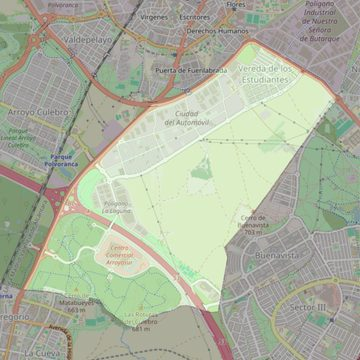

San Ramón Nonato
- Arciprestazgo
- Leganés
- Población
- Leganés
- Dirección postal
- c/ Oviedo, 15
- Código postal
- 28914
- Extensión
- 6,34 km² (634 ha)
- Teléfono
- 916 197 444
- Correo electrónico
- sanramonparroquia.leganes@hotmail.com
- Información demográfica
- De la parroquia · De la población (Leganés) · Del arciprestazgo (Leganés)


Descargar mapaLímites según decreto
"Partiendo de la carretera de Fuenlabrada-Leganés, se toma la variante de Alcorcón-Leganés hasta desembocar en la carretera de Leganés-Getafe hasta llegar al final del término municipal de Leganés" (Decreto de erección de 1-8-95)